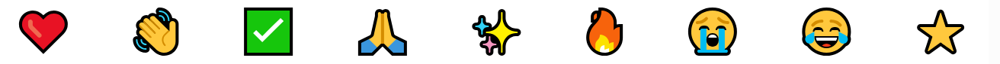
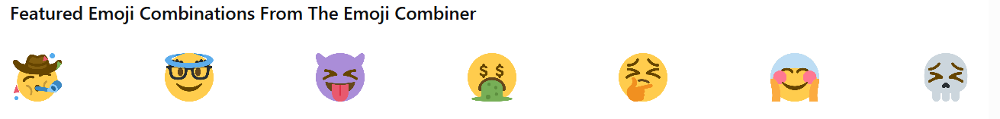
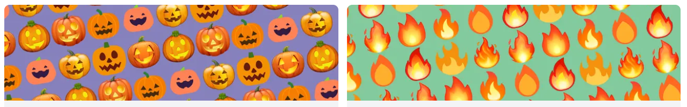
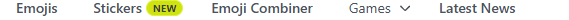
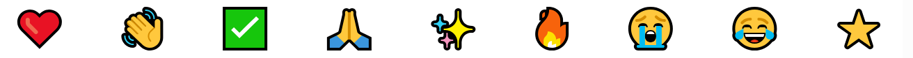
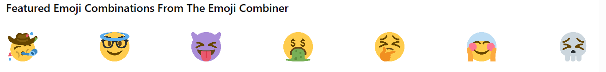
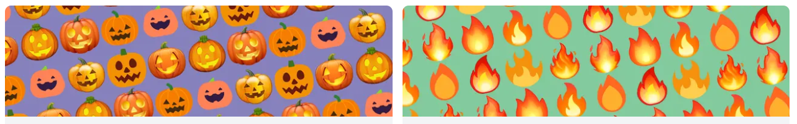

Emojis for upcoming events

latest news



food & Drink Emoji List-All food and Drink Emojis
Emoji from your Emoji keyboard for fruit ,vegetables,meals,beverages and utensils .select the emoji to learn it's meaning see it's design and history,and copy and paste this Emoji.
Most popular



Emojis for upcoming events

latest news